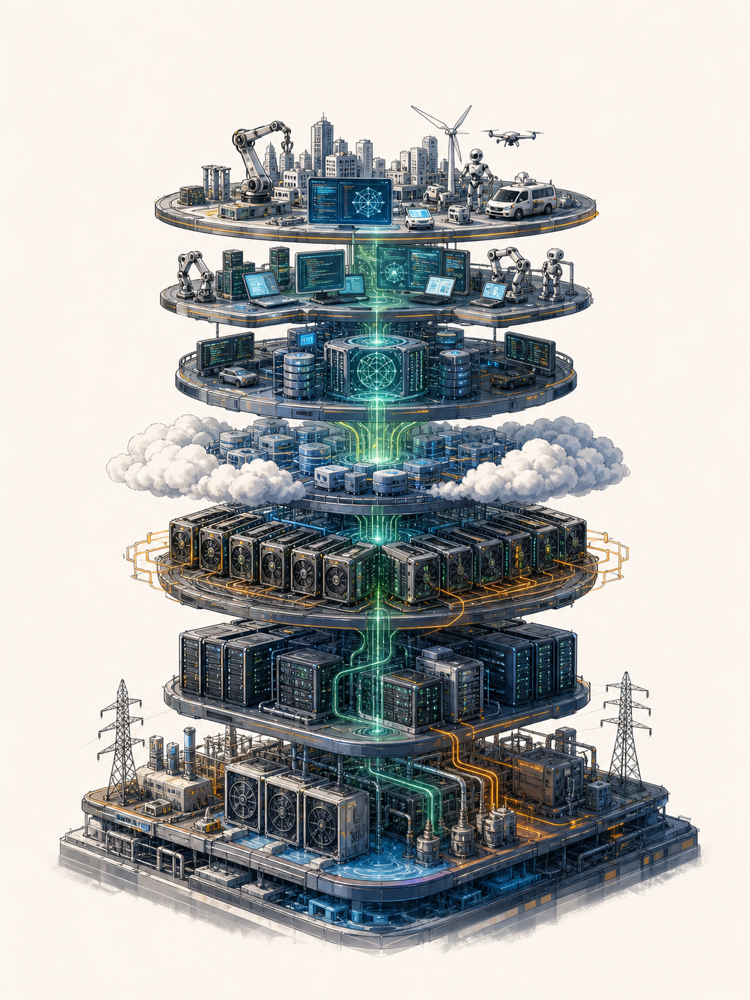
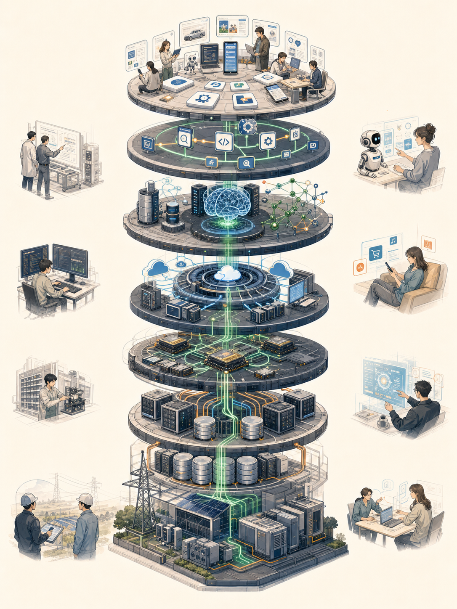
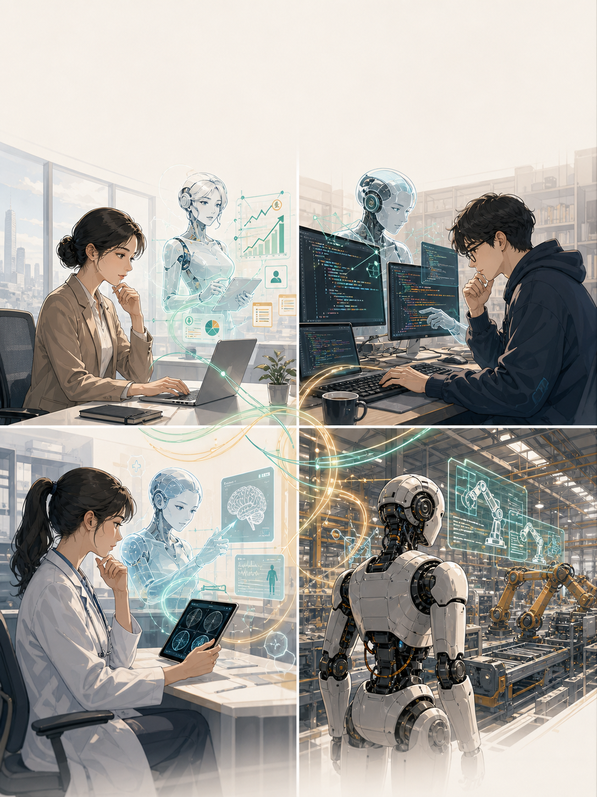
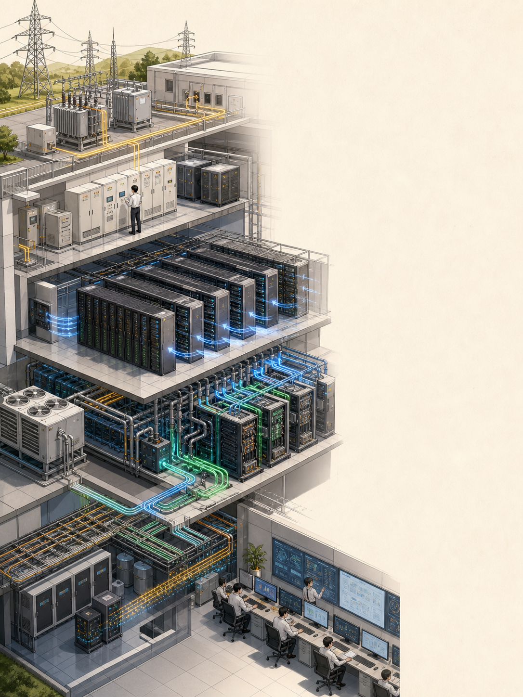

从电力、芯片到应用
一图吃透完整AI产业链

把AI只理解成大模型，就像把汽车产业只理解成发动机。
忽略了电力、算力、数据、分发、交付与真实需求，能力就很难变成稳定收入。
模型能力向上输出，成本与约束从底层层层传导。
底层供给能力，决定上层应用天花板。

用户不会为“AI”付费，只会为更快、更准、更省、更可控的结果付费。

每一次训练和推理，最终都会落到电力、芯片、网络与散热。

稳定电源、UPS与冗余设计，决定集群能否持续运行。
承担矩阵计算，是训练与推理的核心物理产能。
连接大量芯片，降低数据搬运与集群通信损耗。
把高密度算力产生的热量安全、经济地带走。
训练生产通用能力，推理把能力交付给每一次真实任务。
真正的壁垒不是单次训练，而是数据—模型—产品—反馈能否形成持续闭环。
同一份能力，会以不同产品形态进入不同工作流。
按需提供训练、推理和弹性资源，降低基础设施门槛。
让开发者把模型能力快速嵌入产品、流程和Agent。
满足数据隔离、定制、稳定性和合规要求。
把模型、知识、系统集成与交付服务组合起来。
技术链、产品链和商业链并不总是由同一家公司完成。
长期价值通常来自稀缺性、切换成本、场景深度和规模交付。
这是结构判断，不是公司排名。不同产品、客户和交付方式会改变实际议价能力。
物理供给、建设周期和集群效率限制产能。
授权、治理、领域覆盖和持续更新都不容易。
真正上线后，需要兼顾速度、准确、安全和成本。
从Demo到业务系统，还要跨过集成、流程与组织门槛。